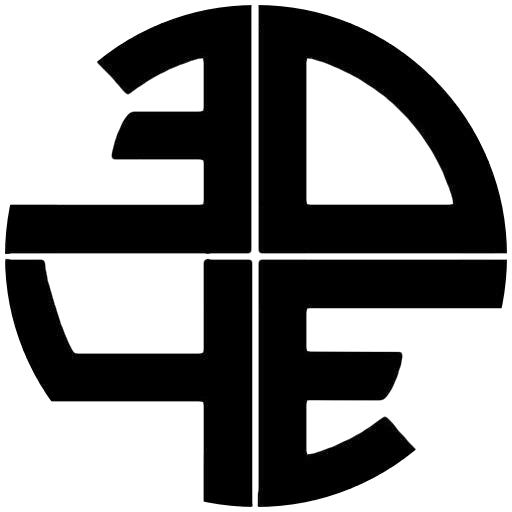

3D4E at UCLA
3D4E (3D For Everyone) is an intercollegiate network of people who are 3D printing and rapid-prototyping enthusiasts. There are currently four chapters in the network, founded by students at UCLA, USC, LMU, and SDSU.In Fall 2014, 3D4E at UCLA co-hosted a 3D printing exhibition with Young's Research Library to demonstrate the capabilities of 3D printers. The event attracted the interest of more than 200 people. In Spring 2015, we have secured a sponsorship agreement with 3D printer manufacturer XYZPrinting Inc.. StartUP UCLA and the Blackstone LaunchPad have also formed a partnership with our club to collaborate on workshops and event.